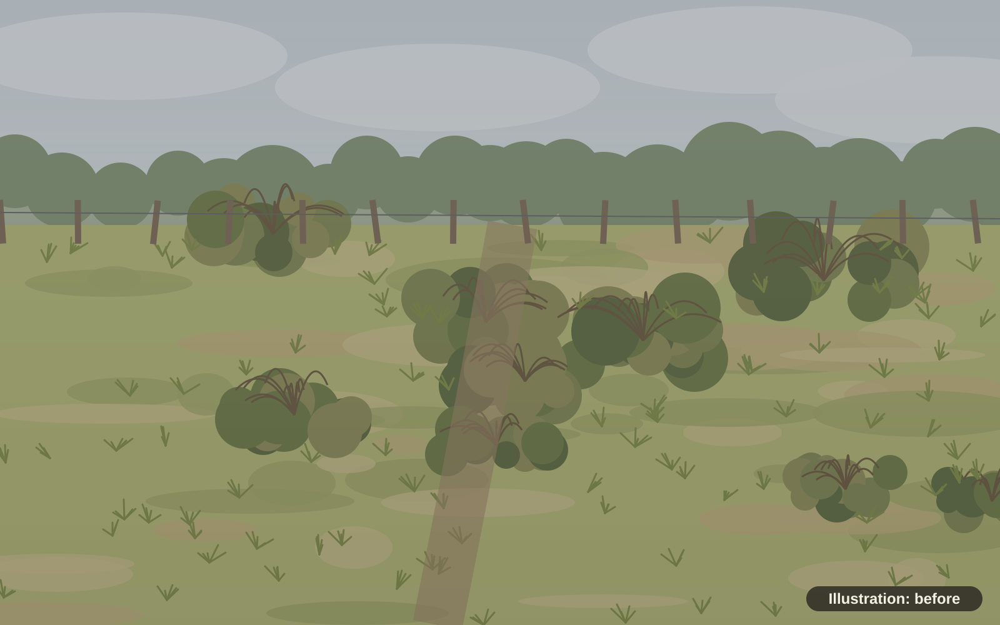
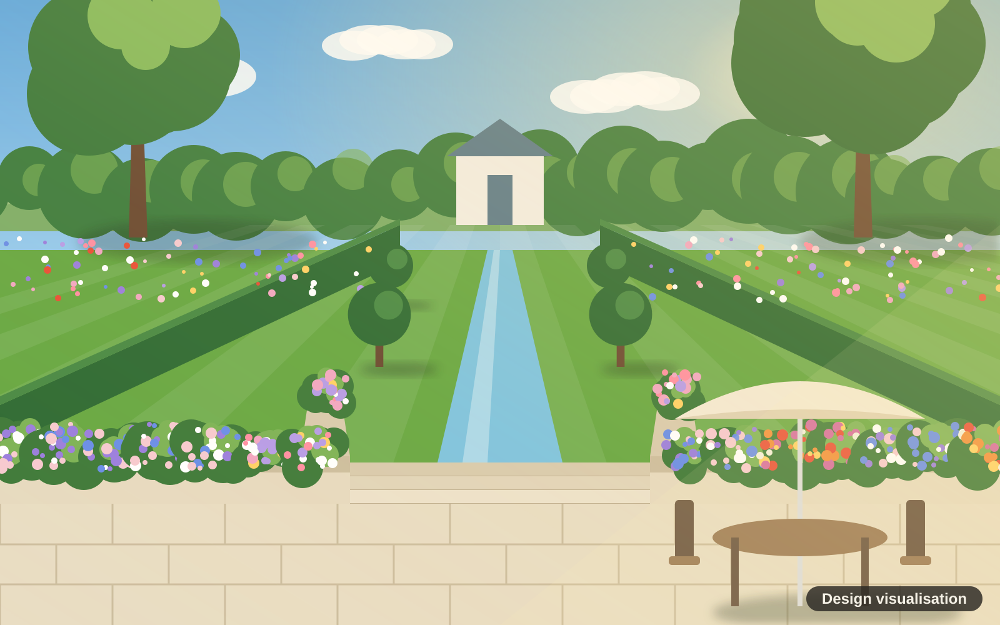

BeforeDesign visualisation
BeforeDesign visualisation
Terraces and courtyards
Small garden, big feeling
A bare yard behind a terraced house turned into a cosy outdoor room for a cup of tea in the morning and a fire on a cool evening.
See the full small garden designTransformations
Three gardens, three sizes, three very different results. Drag each slider to see the change. Keyboard users can use the arrow keys.
About these images: this is a sample website. Each "before" is an illustration and each "after" is a design visualisation, a drawing of a proposed design. None of them are photos of finished jobs.
BeforeDesign visualisation
Terraces and courtyards
A bare yard behind a terraced house turned into a cosy outdoor room for a cup of tea in the morning and a fire on a cool evening.
See the full small garden design
 BeforeDesign visualisation
BeforeDesign visualisation
Medium gardens
A tired lawn, brambles and a falling-down shed turned into a garden with room to eat, room to play and room to relax.
See the full family garden design

BeforeDesign visualisationShowpiece gardens
A rough paddock full of brambles turned into a garden that stops visitors in their tracks.
See the full large garden designTell us a little about your space. Sam will come round, listen, and send a clear written quote. No cost, no pressure.